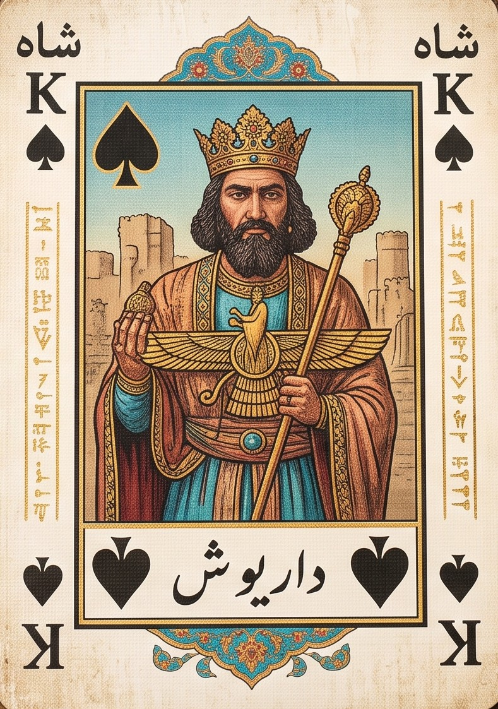
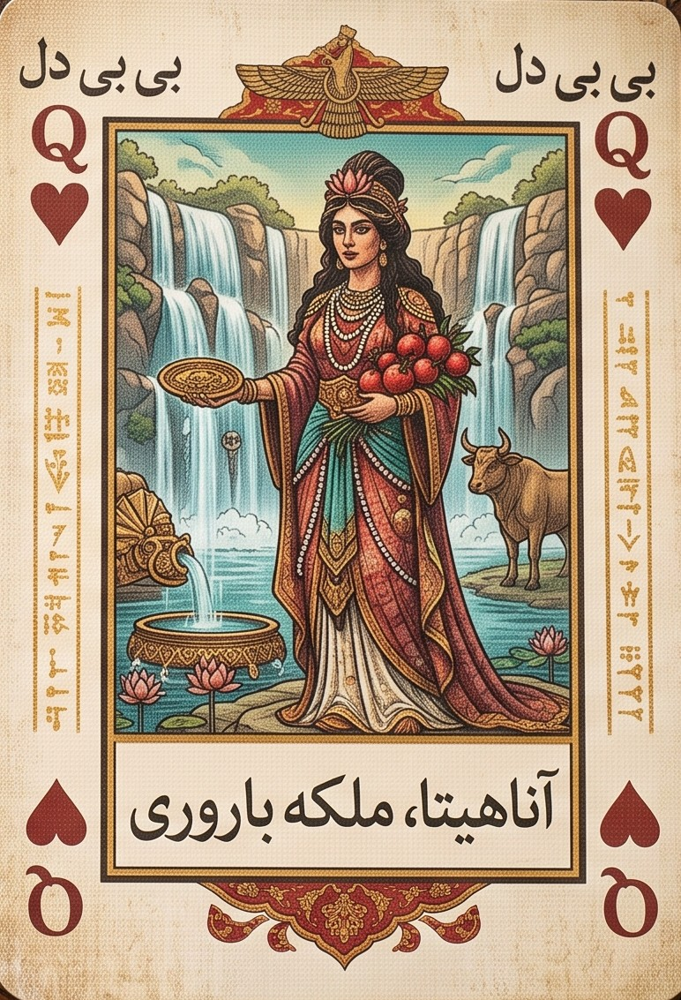
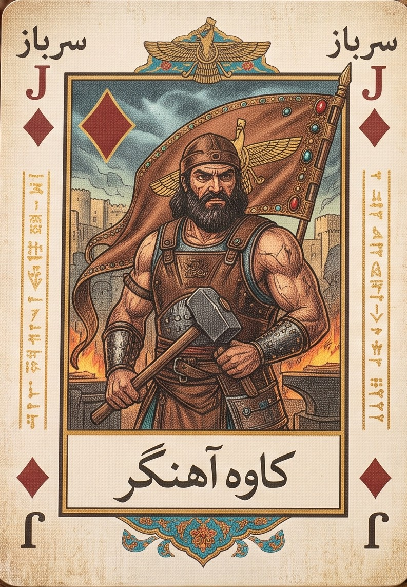
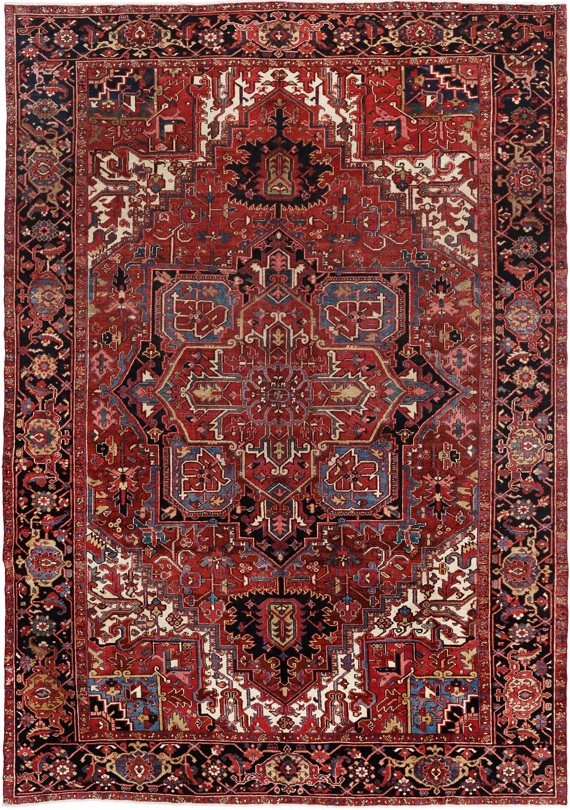

حکم، شلم و بیبیسلام، با رتبهبندی واقعی. بدون نصب، بدون ثبتنام.
کد اتاق داری؟
آخرین دست: ۴ دقیقه پیش · امشب ساعت ۲۱ شلوغترین ساعت است
بازیها

حکم
حکم
بازی اصلی. چهارنفره، دو تیم، و همان خالِ برندهای که سرش بحث میشود.
به زودی

شلم
شلم
سنگینتر و رقابتیتر، با اعلام امتیاز. برای وقتی که حکم برایت ساده شده.
به زودی

بیبیسلام
بیبیسلام
سبکتر و سریعتر. مناسب دورهمیهای خانوادگی و جمعهای بزرگتر.
به زودی
گنجفه
گنجفه
کهنترین بازی ورق ایرانی، با کارتهای نگارگریشده و قواعدی که ریشه در دوران صفوی دارد.
به زودی
بازیهای بیشتری در راه است.
چرا اینجا
رتبهای که واقعاً معنا دارد
همه ادعا میکنند خوب بازی میکنند. اینجا معلوم میشود. بعد از هر بازی کیفیت تصمیمهایت سنجیده میشود، نه فقط برد و باخت — چون در این بازیها شانس هم نقش دارد.
بدون مانع
در مرورگر باز میشود و بازی شروع میشود. کد اتاق را بفرست، رفقایت بدون هیچ دردسری میآیند تو.
چیزی بیشتر از یک میز
بازی پر از چیزهایی است که میشود کشف و جمعشان کرد — کارتهایی با چهرههای آشنای این سرزمین، و آنچه دور میز حال میدهد.
چطور شروع کنی
۱
اتاق بساز — یک کد چهار حرفی میگیری
۲
لینک را بفرست — در تلگرام یا واتساپ
۳
بازی کن — به محض چهار نفر شدن، میز شروع میشود
سه نفر دم دست نیست؟
پیشنمایش
همان میز همیشگی، با تمام حال و هوایش.
روی گوشی و کامپیوتر
در مرورگر بازی کن، یا برنامه را بگیر و همیشه دم دستت داشته باش. اندروید، ویندوز، مک و لینوکس.
حاکمم اولین بازی ماست. تیمی پشتش هست که میخواهد بازیهای بیشتری برای ایرانیها بسازد.
بهزودی
سؤالات متداول
حاکمم چیست؟
جایی برای بازی آنلاین بازیهای ورق ایرانی — حکم، شلم و بیبیسلام — با دوستانتان یا با حریف هوشمند.
رایگان است؟
بله. بازی کردن رایگان است و رایگان میماند.
باید ثبتنام کنم؟
برای بازی نه. برای گرفتن رتبه، ذخیرهی تاریخچه و شرکت در تورنمنتها بله.
باید نصب کنم؟
نه. مستقیم در مرورگر باز میشود. نسخهی نصبی هم هست.
میتوانم فقط با دوستان خودم بازی کنم؟
بله. اتاق خصوصی بسازید و کدش را فقط برای همانها بفرستید.
بازیهای دیگری هم اضافه میشود؟
بله، روی بازیهای ایرانی دیگری کار میکنیم.
بازی حکم آنلاین
حکم، همین حالا، با همان سه نفر
اتاق بساز، لینکش را بفرست، بازی شروع میشود. بدون نصب، بدون ثبتنام.
کد اتاق داری؟
آخرین دست: ۴ دقیقه پیش · بیشترین شلوغی: ۲۱ تا ۲۴
دو دلیل که اینجا بازی کنی
رتبهای که واقعاً معنا دارد
همه میگویند حکمباز خوبی هستند. اینجا معلوم میشود. بعد از هر بازی، کیفیت تصمیمهایت سنجیده میشود — نه فقط اینکه بردی یا باختی، چون در حکم شانس هم نقش دارد. رتبهی شخصی خودت را داری، و یک رتبهی جداگانه با هر کسی که با او یار میشوی.
حریفی که کارت میشمارد
اگر کسی دم دستت نیست، با حریفی بازی میکنی که مثل یک بازیکن قوی فکر میکند — کارتهای رفته را میشمارد، از کارتهای تو حدس میزند، و به این راحتیها نمیبازد. برای تمرین بین دورهمیها.
چطور شروع کنی
۱
اتاق بساز — یک کد چهار حرفی میگیری.
۲
لینک را بفرست — در تلگرام یا واتساپ برای سه نفر دیگر.
۳
بازی کن — به محض اینکه چهار نفر شدید، میز شروع میشود.
عجله داری و سه نفر دم دست نیست؟
پیشنمایش میز
همان میز همیشگی، با تمام حال و هوایش.
بلد نیستی یا سرِ قاعدهای بحث دارید؟
قوانین کامل حکم را نوشتهایم — از حاکم شدن تا کوت و حاکمکوت، بههمراه تفاوتهایی که هر شهر و هر خانواده به شکل خودش بازی میکند.
برای بازی کردن نه. برای گرفتن رتبه، ذخیرهی تاریخچه و شرکت در تورنمنتها باید حساب بسازی.
باید چیزی نصب کنم؟
نه. مستقیم در مرورگر باز میشود.
چند نفر لازم است؟
حکم چهار نفره است. اگر چهار نفر نشدید، جای خالی با حریف هوشمند پر میشود.
میتوانم فقط با دوستان خودم بازی کنم؟
بله. اتاق خصوصی بساز و کدش را فقط برای همانها بفرست.
رتبه چطور حساب میشود؟
بر اساس کیفیت تصمیمهایت، نه فقط برد و باخت. علاوه بر رتبهی شخصی، با هر یاری که با او بازی میکنی یک رتبهی مشترک هم داری.
بازی شلم آنلاین
شلم، با امتیازشماری خودکار
اعلام کن، حکم را انتخاب کن، و ببین به عددت میرسی یا میسوزی. حساب امتیازها با ماست.
کد اتاق داری؟
دو دلیل که اینجا بازی کنی
امتیاز را ما میشماریم
در شلم آخر هر دست باید امتیاز کارتهای بردهشده را جمع بزنید — و همینجاست که بحث شروع میشود. اینجا شمارش خودکار است: امتیاز کارتها، امتیاز دستها، آخری، و سوختن، همه بیخطا حساب میشوند.
قاعدههای میز خودتان
آس ۱۰ یا ۱۵؟ جوکر دارید یا نه؟ امتیاز پایان بازی ۱۱۰۰ یا ۱۶۵۰؟ پیش از شروع میز، قاعدهها را همانطور که در جمع خودتان بازی میکنید تنظیم کنید.
چطور شروع کنی
۱
اتاق بساز — یک کد چهار حرفی میگیری.
۲
قاعدهها را تنظیم کن — حداقل اعلام، جوکر، امتیاز پایان.
۳
لینک را بفرست — به محض چهار نفر شدن، حراج شروع میشود.
عجله داری و سه نفر دم دست نیست؟
پیشنمایش میز
میز شلم با تختهی اعلام و امتیاز، بالای دست هر تیم.
شلم بلد نیستی؟
قوانین کامل شلم را نوشتهایم — از حراج و زمین تا امتیاز کارتها، سوختن، شلم کامل و همهی واریانتها از جمله شلم با جوکر.
برای بازی کردن نه. برای ذخیرهی تاریخچه باید حساب بسازی.
چند نفر لازم است؟
بیبیسلام با جمعهای بزرگتر هم بازی میشود. تعداد دقیق را هنگام ساختن اتاق انتخاب میکنید.
باید چیزی نصب کنم؟
نه. مستقیم در مرورگر باز میشود.
نماد بز در هنر ایرانی
بز کوهی یکی از کهنترین نقشهای هنر ایران است؛ از سفالهای سیلک و شوش تا مفرغهای لرستان و نقشبرجستههای هخامنشی روی سطحها تکرار شده است.
شاخهای هلالیاش را با ماه و باران پیوند میدادند و بز را نشانهی برکت، چابکی و باروری میدانستند. همین نقش قرنها بعد هم در قالیهای ایلیاتی و کاشیکاری ادامه یافت.
نماد بز در هنر ایرانی
بز کوهی یکی از کهنترین نقشهای هنر ایران است؛ از سفالهای سیلک و شوش تا مفرغهای لرستان و نقشبرجستههای هخامنشی روی سطحها تکرار شده است.
شاخهای هلالیاش را با ماه و باران پیوند میدادند و بز را نشانهی برکت، چابکی و باروری میدانستند. همین نقش قرنها بعد هم در قالیهای ایلیاتی و کاشیکاری ادامه یافت.
قوانین حکم
قوانین کامل بازی حکم — از حاکم شدن تا کوت
حکم شناختهشدهترین بازی ورق ایران است. چهار نفر، دو تیم دو نفرهی روبهرو، یک دست پاسور و یک خالِ برنده که یکی از بازیکنها انتخابش میکند. قاعدههایش را تقریباً همه بلدند — ولی تقریباً هیچ دو خانوادهای دقیقاً یکجور بازی نمیکنند، و بیشتر بحثهای سر میز هم دقیقاً از همینجا شروع میشود.
این صفحه قوانین پایه را کامل توضیح میدهد و بعد سراغ همان تفاوتها میرود.
خلاصهی سریع
بازیکن: ۴ نفر، دو تیم دو نفره
کارت: ۵۲ برگ، بدون جوکر
هدف هر دست: بردن ۷ دست از ۱۳ دست
هدف بازی: رسیدن به ۷ امتیاز
مدت: حدود ۱۰ تا ۱۵ دقیقه برای هر دست
چه چیزی لازم داری
یک دست کارت پاسور ۵۲ برگی (جوکرها کنار گذاشته میشوند)
چهار بازیکن
بازیکنها دو به دو تیم میشوند و هر تیم روبهروی هم مینشینند، طوری که یارِ هرکس دقیقاً مقابلش باشد. یعنی نفرات سمت راست و چپ شما همیشه حریفاند.
برای یارکشی معمولاً هر کس یک کارت برمیدارد و دو نفری که بالاترین کارتها را دارند یار میشوند — ولی در بیشتر جمعها یارها از قبل معلوماند و کسی زحمت این کار را نمیکشد.
انتخاب حاکم
حاکم کسی است که خالِ حکم را انتخاب میکند و دست اول را شروع میکند. برای پیدا کردنش:
کارتها را بُر میزنند و یکییکی رو میکنند و به بازیکنها میدهند. هر کس اولین آس را بیاورد، حاکم میشود.
یارِ حاکم همان کسی است که مقابلش نشسته. پخشکنندهی کارت هم بازیکن سمت حاکم از تیم مقابل است.
پخش کارت و انتخاب حکم
پخش در سه مرحله انجام میشود:
مرحلهی اول: به هر بازیکن ۵ کارت داده میشود.
انتخاب حکم: حاکم به همان ۵ کارت اولش نگاه میکند و فقط بر اساس همانها خالِ حکم را اعلام میکند — دل، خشت، گشنیز یا پیک. این تصمیم برگشتپذیر نیست.
مرحلهی دوم و سوم: بعد از اعلام حکم، بقیهی کارتها در دو نوبت چهارتایی پخش میشود تا دست هر بازیکن به ۱۳ کارت برسد.
نکتهی مهم: پخش باید در مرحلهی اول متوقف بماند و تا وقتی حاکم حکم را اعلام نکرده، به یارش کارتی داده نمیشود.
بازی کردن یک دست
حاکم اولین کارت را روی میز میگذارد. بعد به ترتیب، هر بازیکن یک کارت بازی میکند. چهار کارت روی میز یک «دست» را میسازند.
قاعدهی اصلی — خال را دنبال کن: اگر از خالی که شروع شده کارت داری، موظفی از همان خال بازی کنی.
اگر نداری: آزادی. میتوانی حکم بیندازی و دست را ببری، یا هر کارت دیگری بریزی.
چه کسی دست را میبرد:
اگر حکمی در دست بازی شده باشد، بالاترین حکم برنده است
اگر حکمی بازی نشده باشد، بالاترین کارت از خالِ شروعشده برنده است
برندهی هر دست، دست بعدی را شروع میکند.
امتیازدهی و کوت
هر بازی ۱۳ دست دارد. تیمی که زودتر ۷ دست ببرد، برندهی آن بازی است — و به محض رسیدن به ۷، بازی همانجا تمام میشود.
نتیجهامتیاز
بردن عادی (۷ دست)۱ امتیاز
کوت — بردن هر ۷ دست پشت سر هم بدون اینکه حریف حتی یک دست ببرد۲ امتیاز
حاکمکوت — وقتی تیم مقابل، تیم حاکم را کوت کند۳ امتیاز
حاکمکوت سنگینترین نتیجهی بازی است، چون تیم حاکم با مزیت شروع کرده و انتخاب خال هم دستش بوده — و با این حال یک دست هم نبرده.
تیمی که زودتر به ۷ امتیاز برسد، برندهی کل بازی است.
حاکم بعدی کیست
اگر تیم حاکم آن دست را برده باشد، حاکم حاکم میماند و همان نفر دوباره پخش میکند.
اگر تیم مقابل برده باشد، حاکمی به تیم مقابل منتقل میشود.
یعنی حاکم بودن یک امتیاز است که با بردن حفظ میشود.
حالتهای بدون حکم: سرس، نرس و آس نرس
گاهی پنج کارت اول حاکم آنقدر بد است که هیچ خالی ارزش حکم شدن ندارد — نه کارت بالایی هست، نه یک خال بهاندازهی کافی بلند. در بسیاری از جمعها، حاکم در این حالت میتواند بهجای انتخاب خال، یکی از سه حالت بدون حکم را اعلام کند.
در هر سه حالت، هیچ خالی حکم نیست و برش وجود ندارد. یعنی اگر از خالِ شروعشده کارت نداشته باشی، هر چه بریزی آن دست را نمیبری — فقط از دستت خارج میشود. تنها چیزی که میان این سه فرق میکند، ترتیب قدرت کارتهاست.
حالتترتیب قدرت کارتهاقویترینضعیفترین
سرسمثل بازی عادیآس۲
نرسکاملاً برعکس۲آس
آس نرسبرعکس، ولی آس بالای همهآس، بعد ۲شاه
سرس
قدرت کارتها همان چیزی است که همیشه میشناسی — آس بالاترین، بعد شاه و بیبی و سرباز، تا برسد به ۲. تنها تفاوتش با بازی معمولی این است که هیچ خالی حکم نیست، پس نمیشود دستی را برید.
حاکم معمولاً وقتی سرس اعلام میکند که کارتهای بالا دارد ولی در چند خال پخش شدهاند و هیچ خالِ بلندی ندارد که ارزش حکم کردن داشته باشد.
نرس
همهچیز وارونه میشود. ۲ قویترین کارت است و آس ضعیفترین. ترتیب کامل از بالا به پایین:
۲ · ۳ · ۴ · ۵ · ۶ · ۷ · ۸ · ۹ · ۱۰ · سرباز · بیبی · شاه · آس
این همان حالتی است که دستهای بهظاهر بیارزش را به دست برنده تبدیل میکند. حاکمی که دستش پر از کارتهای پایین است، نرس اعلام میکند و همان کارتها ناگهان قویترینهای میز میشوند.
آس نرس
مثل نرس است، با یک استثنا: آس دوباره به بالای جدول برمیگردد. ترتیب کامل:
آس · ۲ · ۳ · ۴ · ۵ · ۶ · ۷ · ۸ · ۹ · ۱۰ · سرباز · بیبی · شاه
این حالت برای دستی است که هم کارتهای پایین دارد و هم چند آس — در نرس ساده، آن آسها ضعیفترین کارتهای دست بودند و هدر میرفتند؛ در آس نرس هر کدامشان یک دست تضمینی است.
چند نکتهی مهم
زمان اعلام
حاکم باید حالت را پیش از بازی کردن اولین کارت اعلام کند. بعد از شروع، قابل تغییر نیست — مثل خودِ حکم.
دنبال کردن خال
قاعده عوض نمیشود: اگر از خالِ شروعشده کارت داری، موظفی از همان بازی کنی.
امتیازدهی
در رایجترین شکل، امتیازها همان امتیازهای حکم عادی است — ۷ دست برای برد، کوت و حاکمکوت سر جای خودشان. ولی بعضی جمعها برای این حالتها امتیاز متفاوتی قائلاند.
چرا نامها گیجکنندهاند
«سرس» و «نرس» در بسیاری از جمعها با هم اشتباه گرفته میشوند و در بعضی شهرها معنایشان دقیقاً برعکس چیزی است که اینجا نوشته شده. آنچه بالا آمده رایجترین تعریف است — ولی سر میز، قبل از شروع یک بار سرِ تعریفها توافق کنید.
واریانتهای منطقهای و خانگی
اینجا همان جایی است که بحثها شروع میشود. قوانین بالا رایجترین شکل بازیاند، ولی هر شهر و هر خانواده نسخهی خودش را دارد.
امتیاز لازم برای برد کل بازی — بیشتر جمعها تا ۷ امتیاز بازی میکنند، بعضی تا ۱۱ و بعضی تا ۵.
ارزش کوت — جایی ۲ امتیاز، جایی همان ۱ امتیاز با یک اسم بزرگتر. حاکمکوت هم در بعضی جمعها ۳ و در بعضی ۲ حساب میشود.
شکل پخش کارت — ۵ تا، بعد دو نوبت ۴ تایی، شکل رایج است. بعضیها بعد از ۵ کارت اول، بقیه را یکجا هشتتایی میدهند.
تعداد کارتهای حاکم برای انتخاب حکم — استاندارد ۵ کارت است، ولی جاهایی حاکم فقط با ۳ کارت اول تصمیم میگیرد.
نحوهی مشخص شدن حاکم اول — رایجترینش رو کردن کارت تا آمدن اولین آس است. بعضی جمعها بهجایش کارت میکشند.
بازی بدون حکم — در بعضی حلقهها حاکم میتواند اعلام کند که این دست حکمی ندارد.
حکمِ شما کدام است؟ اگر در شهر یا خانوادهی شما قاعدهای هست که اینجا نیامده، برایمان بفرستید.
واژهنامه
حاکم
بازیکنی که خال حکم را انتخاب میکند و بازی را شروع میکند.
حکم
خالِ برنده. هر کارت از این خال، از هر کارت خال دیگری بالاتر است.
دست
یک دور کامل که در آن هر چهار بازیکن یک کارت بازی میکنند.
کوت
بردن هفت دست پشت سر هم بدون اینکه حریف حتی یک دست بگیرد.
حاکمکوت
کوت کردنِ تیمی که حاکم در آن است.
یار
بازیکن روبهرویی شما؛ همتیمی.
بُر زدن
مخلوط کردن کارتها قبل از پخش.
اشتباههای رایج تازهکارها
حکم را زود خرج کردن.
کارتهای حکم ابزار بردن دستهای مهماند. اگر همه را در دستهای اول بسوزانی، اواخر بازی بیدفاع میمانی.
فراموش کردن اینکه چه کارتهایی رفته.
بازیکن خوب حکم، کارت میشمارد.
بازی کردن علیه یار.
اگر یارت دست را برده، لازم نیست کارت خوبت را خرج کنی.
انتخاب عجولانهی حکم.
خالی را انتخاب کن که هم تعدادش بیشتر است هم کارتهای بالاتری داری — نه صرفاً خالی که آسش دستت است.
سؤالات متداول
حکم چند نفره بازی میشود؟
شکل استاندارد چهار نفره است، در دو تیم دو نفرهی روبهرو.
کوت یعنی چه؟
یعنی یک تیم هر هفت دست لازم برای برد را پشت سر هم ببرد، بدون اینکه حریف حتی یک دست بگیرد. کوت ۲ امتیاز دارد.
حاکمکوت چه فرقی با کوت دارد؟
حاکمکوت وقتی است که تیم مقابل، تیمِ حاکم را کوت کند. این نتیجه ۳ امتیاز دارد.
آیا حکم بعد از هر دست عوض میشود؟
نه. اگر تیم حاکم آن دست را ببرد، حاکم حاکم میماند.
اگر از خال شروعشده کارت نداشته باشم چه کنم؟
هر کارتی میتوانی بازی کنی — از جمله حکم.
میشود حکم را آنلاین بازی کرد؟
بله. در حاکمم بدون نصب و بدون ثبتنام میتوانی بازی کنی.
بازیهای دیگر
شلم — بازی چهارنفره با اعلام امتیاز
بیبیسلام — سبکتر و مناسب دورهمی خانوادگی
بته جقه
طرحی که روی بدن بز میبینی بته جقه است؛ نقشی با انحنای سرکج که از دوره صفوی در ترمه، قلمکار و شال کرمان جا افتاد و بعدها در اروپا با نام پیزلی شناخته شد.
دربارهی ریشهاش روایتهای مختلفی هست: شکل سرو خمیده به نشانهی سرفرازی همراه با فروتنی، برگ نخل، یا شعلهی آتش زرتشتی. در همهی این خوانشها بته جقه نشانهی زندگی و پایداری است.
بته جقه
طرحی که روی بدن بز میبینی بته جقه است؛ نقشی با انحنای سرکج که از دوره صفوی در ترمه، قلمکار و شال کرمان جا افتاد و بعدها در اروپا با نام پیزلی شناخته شد.
دربارهی ریشهاش روایتهای مختلفی هست: شکل سرو خمیده به نشانهی سرفرازی همراه با فروتنی، برگ نخل، یا شعلهی آتش زرتشتی. در همهی این خوانشها بته جقه نشانهی زندگی و پایداری است.
قوانین شلم
آموزش بازی شلم
شلم بازی ورقِ چهارنفرهی دو به دویی است که در آن، برخلاف حکم، فقط تعداد دستها مهم نیست — ارزش کارتهایی که جمع میکنید مهم است. و پیش از شروع باید بگویید چند امتیاز میآورید. اگر بیاورید، برندهاید. اگر نیاورید، همان عدد از شما کم میشود.
همین یک قاعده، شلم را از یک بازی مهارتی به یک بازی مهارت و شهامت تبدیل میکند.
اگر حکم بلدید، شلم را در ده دقیقه یاد میگیرید. اگر نه، این صفحه از صفر شروع میکند.
در یک نگاه
بازیکنها: ۴ نفر، دو تیم دو نفرهی روبهرو
کارتها: یک دست ورق کامل، ۵۲ برگ
کارت هر نفر: ۱۲ برگ · ۴ برگ باقیمانده «زمین» میشود
امتیاز کل هر دست: ۱۶۵
حداقل اعلام: ۱۰۰
مدت یک دست: حدود ۵ دقیقه
مدت یک بازی کامل: حدود ۳۰ تا ۴۵ دقیقه
سختی یادگیری: متوسط — قوانین ساده، تصمیمها سخت
چه چیزی لازم دارید
چهار نفر. شلم دقیقاً چهار نفره است. سهنفره و پنجنفرهی جاافتاده ندارد.
دو تیم. هر کس با نفر روبهرویش همتیمی است. تیمها روی میز یکی در میان مینشینند تا دو همتیمی کنار هم نباشند.
یک دست ورق کامل. هر ۵۲ برگ. کارتها را کنار نگذارید.
کاغذ و قلم — یا فقط گوشیتان. برخلاف حکم، در شلم واقعاً باید امتیاز نوشت. اگر با ما بازی کنید، این کار خودکار انجام میشود.
شروع بازی
نشستن و تیمبندی
چهار نفر دور میز. هر کس همتیمیِ نفر روبهرو است. جهت بازی در شلم معمولاً پادساعتگرد است (سمت راست دستدهنده اول بازی میکند)، ولی این در جمعهای مختلف فرق دارد و تأثیری بر قواعد ندارد — فقط از اول توافق کنید.
پخش کارت
کارتها بُر میخورند و دستدهنده به هر نفر ۱۲ برگ میدهد — معمولاً چهارتا چهارتا، نه یکییکی.
۴ برگ باقی میماند. این چهار برگ رو به پایین وسط میز میماند و به آن «زمین» یا «طاق» میگویند. هیچکس فعلاً نمیبیندشان.
۴ نفر × ۱۲ برگ = ۴۸ برگ + ۴ برگ زمین = ۵۲ برگ
حراج — قلب شلم
حالا هر کس کارتهایش را نگاه میکند و تخمین میزند تیمش چند امتیاز از ۱۶۵ امتیازِ این دست میتواند جمع کند.
بعد نوبتی، هر کس یا عددی اعلام میکند یا پاس میدهد:
کمترین عدد قابل اعلام: ۱۰۰
اعلامها باید مضرب ۵ باشند: ۱۰۰، ۱۰۵، ۱۱۰، …
هر اعلام باید از اعلام قبلی بالاتر باشد
هرکس یکبار پاس بدهد، تا آخر آن دست از حراج بیرون است و دیگر نمیتواند برگردد
حراج وقتی تمام میشود که سه نفر پاس داده باشند. نفر باقیمانده حاکم آن دست است و تیمش قرارداد را قبول کرده: باید حداقل همان عددی که گفته امتیاز جمع کند.
اگر همه پاس بدهند چه میشود؟ در بیشتر جمعها کارتها جمع میشود و همان دستدهنده دوباره پخش میکند. در بعضی جمعها نفر آخر مجبور است ۱۰۰ اعلام کند.
زمین و دور انداختن
حاکم آن چهار برگ زمین را برمیدارد و به کارتهایش اضافه میکند. حالا ۱۶ برگ دارد.
بعد چهار برگ دلخواه را رو به پایین کنار میگذارد تا دوباره ۱۲ برگ داشته باشد.
نکتهی مهم: کارتهایی که حاکم کنار میگذارد، امتیازشان مال تیم خودش است. پس اگر آسی در زمین بود که به دردش نمیخورد، دور انداختنش امتیازش را از دست نمیدهد. این یک قاعدهی کلیدی است که خیلیها نمیدانند.
انتخاب حکم
حاکم تصمیم میگیرد کدام خال حکم باشد. در روایت سنتی، اولین کارتی که حاکم زمین میزند خالش را حکم میکند — یعنی تا اولین حرکت، هیچکس حکم را نمیداند. در نسخههای امروزیتر (و در بازی ما) حاکم حکم را صریح اعلام میکند تا همه از اول بدانند.
روند بازی
از اینجا به بعد دقیقاً مثل حکم است. حاکم اولین کارت را میزند. بعد بقیه به نوبت یک کارت میگذارند.
قانون اصلی: باید از همان خال بازی کنید. اگر از خالی که شروع شده کارت دارید، حتماً باید از همان بگذارید. اگر ندارید، آزادید هر کارتی بگذارید — از جمله حکم.
دست را چه کسی میبرد؟ اگر کسی حکم گذاشته باشد، بزرگترین حکم میبرد. اگر هیچ حکمی گذاشته نشده، بزرگترین کارتِ خالِ شروع میبرد.
ترتیب قدرت کارتها: آس › شاه › بیبی › سرباز › ۱۰ › ۹ › … › ۲
برندهی هر دست، دست بعد را شروع میکند. مجموعاً ۱۲ دست بازی میشود تا کارتها تمام شود.
کارتهای بردهشده را دور نریزید. برخلاف حکم، در شلم آخر کار باید امتیاز کارتهای داخل دستهای بردهشده را بشمارید. هر تیم دستهایش را یکجا جلوی خودش نگه میدارد.
امتیازدهی
اینجا تفاوت اصلی شلم با حکم است. دو چیز امتیاز دارد: بعضی کارتها، و خودِ دستها.
امتیاز کارتها
کارتامتیازتعداد در دست ورقجمع
آس۱۰۴۴۰
۱۰۱۰۴۴۰
۵۵۴۲۰
بقیهی کارتها۰—۰
جمع امتیاز کارتها: ۱۰۰
امتیاز دستها
هر یک از ۱۲ دست، پنج امتیاز دارد — مهم نیست چه کارتهایی در آن باشد. جمع امتیاز دستها: ۱۲ × ۵ = ۶۰
۱۰۰ + ۶۰ = ۱۶۰؟ پس ۱۶۵ از کجا میآید؟ این پرسش پرتکرارترین سؤال شلم است. در بیشتر روایتها، پنج امتیاز اضافه به تیمی میرسد که آخرین دست را میبرد — به آن «آخری» یا «دست آخر» میگویند. با آن، جمع دقیقاً ۱۶۵ میشود. در بعضی جمعها بهجای آن، امتیاز دستها را ۱۳ در ۵ حساب میکنند (چون کارتهای دورانداختهی حاکم هم یک دست به حساب میآید). نتیجه یکی است.
حساب کردن نتیجه
آخر دست، هر تیم امتیاز کارتهای داخل دستهایش را جمع میکند، بهعلاوهی ۵ امتیاز به ازای هر دست. جمع دو تیم همیشه ۱۶۵ میشود. بعد:
اگر تیم حاکم به عدد اعلامش رسید یا از آن گذشت — همان امتیازی که واقعاً جمع کرده به حسابش اضافه میشود.
اگر نرسید — عدد اعلامشده از حسابش کم میشود. نه امتیازی که آورده — عددی که گفته بود. این «سوختن» است و تنبیهش سنگین است.
تیم مقابل در هر دو حالت همان امتیازی را که واقعاً جمع کرده برمیدارد.
مثال
تیم الف ۱۲۰ اعلام میکند.
نتیجهامتیاز تیم الفامتیاز تیم ب
تیم الف ۱۳۵ جمع کرد+۱۳۵+۳۰
تیم الف ۱۲۰ جمع کرد (دقیقاً)+۱۲۰+۴۵
تیم الف ۱۱۵ جمع کرد−۱۲۰+۵۰
دقت کنید: در سطر آخر، تیم الف با اینکه ۱۱۵ امتیاز واقعی جمع کرده، ۱۲۰ امتیاز از دست میدهد. پنج امتیاز کمآوردن، ۲۳۵ امتیاز اختلاف میسازد.
شلم
اگر تیم حاکم هر ۱۲ دست را ببرد، به آن «شلم» میگویند — همان کلمهای که اسم بازی از آن آمده (از «chelem» فرانسوی، به معنی قبضهکردن کامل). شلم امتیاز ویژه دارد.
بعضی جمعها «اعلام شلم» هم دارند: حاکم پیش از شروع میگوید قصد دارد همهی دستها را ببرد. اگر موفق شود امتیاز بیشتری میگیرد، اگر حتی یک دست ببازد، جریمهی سنگینتری میشود.
پایان بازی
بازی تا رسیدن یک تیم به امتیاز هدف ادامه دارد. رایجترین عدد ۱۱۰۰ است، ولی جمعهای مختلف ۱۱۶۵، ۱۴۰۰ یا ۱۶۵۰ هم بازی میکنند.
واریانتها
شلم بازیای است که تقریباً هیچ دو جمعی دقیقاً مثل هم بازیاش نمیکنند. اینها رایجترینهایند.
شلم با جوکر
پرطرفدارترین واریانت. دو جوکر وارد بازی میشوند و بازی را تندتر و پرریسکتر میکنند.
جوکرها هم امتیاز دارند و هم قدرت. هر دو جوکر بالاتر از هر کارت دیگری هستند — حتی بالاتر از آس حکم. جوکر بزرگ (رنگی) از جوکر کوچک (سیاهوسفید) بالاتر است.
کارتامتیازقدرت
جوکر بزرگ۲۰بالاترین کارت بازی
جوکر کوچک۱۵دوم
با اضافه شدن ۳۵ امتیاز، جمع امتیاز هر دست از ۱۶۵ به ۲۰۰ میرسد و حداقل اعلام معمولاً بالاتر میرود.
دو مسئلهی فنی که باید حل شود:
۱. تعداد کارت. با ۵۴ برگ، تقسیم ۱۲تایی جواب نمیدهد. دو راه رایج: یا دو کارت کمارزش (معمولاً دو تا ۲) کنار گذاشته میشود تا باز ۵۲ برگ بماند، یا زمین ششبرگی میشود.
۲. جوکر از چه خالی است؟ چون جوکر خال ندارد، وقتی کسی جوکر میزند باید مشخص باشد بقیه چه کاری مجازند. رایجترین قاعده: جوکر را میشود هر وقت خواستید بازی کنید، حتی اگر از خال شروعشده کارت داشته باشید — و اگر جوکر خودش دست را شروع کند، نفر بعدی هر کارتی که بخواهد میگذارد.
حالتهای بدون حکم: سرس، نرس و آس نرس
همان سه حالتی که در حکم هم وجود دارد. حاکم بهجای انتخاب خال حکم، میتواند اعلام کند که دست بدون حکم بازی شود:
حالتترتیب قدرت کارتهاقویترینضعیفترین
سرسمثل بازی عادیآس۲
نرسکاملاً برعکس۲آس
آس نرسبرعکس، ولی آس بالای همهآس، بعد ۲شاه
در هیچکدام حکم وجود ندارد و همیشه بزرگترین کارتِ خالِ شروع دست را میبرد. چون این حالتها سختترند، معمولاً امتیازشان ضریب بیشتری دارد.
آسِ ۱۵ امتیازی
در بعضی جمعها آس ۱۵ امتیاز حساب میشود نه ۱۰. با این حساب امتیاز کارتها ۱۲۰ میشود و جمع کل دست به ۱۸۵ میرسد. حداقل اعلام هم متناسب با آن بالاتر میرود.
حراج بدون سقف
در روایت پایه، سقف اعلام ۱۶۵ است (همهی امتیاز موجود). بعضی جمعها اجازه میدهند بالاتر از ۱۶۵ هم اعلام شود — یعنی حاکم قول شلم کامل میدهد و اعلامش عملاً یک شرطبندی روی همهی دستهاست.
دیدن زمین پیش از حراج
واریانتی که بازی را خیلی آسانتر میکند: یکی از چهار برگ زمین رو گذاشته میشود تا همه پیش از اعلام ببینندش. ریسک حراج پایین میآید و بازی محافظهکارانهتر میشود.
تکخالی اجباری
قاعدهی خانگی رایج: اگر تیم حاکم بسوزد، دست بعد حق اعلام ندارد. هدفش این است که یک تیم پشتسرهم ریسکهای بزرگ نکند.
شما چطور بازی میکنید؟
شلم در هر شهر و هر خانواده یک قاعدهی کوچک متفاوت دارد. اگر در جمع شما قاعدهای هست که اینجا نیامده، برایمان بنویسید. قاعدههای تأییدشده را با نام شهر یا جمعی که فرستاده به همین صفحه اضافه میکنیم.
واژهنامه
اصطلاحمعنی
حاکمکسی که بالاترین عدد را اعلام کرده و قرارداد دست با اوست
زمین / طاقچهار برگ باقیمانده که حاکم برمیدارد
اعلام / خوانشعددی که تیم قول میدهد جمع کند
دستیک دور چهار کارتی
حکمخالی که بر همهی خالها برتری دارد
سوختننرسیدن به عدد اعلامشده و کم شدن آن از امتیاز تیم
شلمبردن هر ۱۲ دست
آخریپنج امتیاز اضافهی دست آخر
سرس / نرس / آس نرسحالتهای بدون حکم
پاسانصراف از حراج — بازگشتناپذیر تا پایان آن دست
اشتباههای رایج
۱. فکر کردن اینکه تعداد دستها مهم است. بزرگترین اشتباه کسی که از حکم میآید. در شلم میشود ۸ دست از ۱۲ دست را برد و باز هم باخت، اگر آسها و دهها در چهار دست دیگر بوده باشند.
۲. اعلام بلندپروازانه با کارت خوب ولی بیهمتیمی. کارتهای شما نصف ماجراست. اگر همتیمیتان پاس داده، یعنی دستش خالی است — اعلامتان را پایین بیاورید.
۳. دور انداختن کارتهای امتیازدار در مرحلهی زمین. یادتان باشد امتیاز کارتهای دورانداخته مال شماست، ولی خودِ کارت دیگر برای بردن دست به کارتان نمیآید. آسِ خالی که حکم نیست را دور بیندازید؛ آسِ حکم را هرگز.
۴. نگه داشتن حکم تا آخر بازی. حکمهای نگهداشتهشده در دست شما امتیاز نمیسازند. حکم برای گرفتن دستهای امتیازدار است، نه برای نمایش.
۵. فراموش کردن اینکه پاس بازگشتناپذیر است. خیلیها برای «دیدن اینکه بقیه چه میگویند» پاس میدهند و بعد میخواهند برگردند. نمیشود.
۶. جمع نکردن دستهای بردهشده جدا. آخر دست باید بشمارید. اگر کارتها قاطی شده باشند، شمارش غیرممکن است.
سؤالهای پرتکرار
شلم را چند نفر بازی میکنند؟
دقیقاً چهار نفر، در دو تیم دو نفرهی روبهرو.
فرق شلم و حکم چیست؟
در حکم فقط تعداد دستها مهم است و حکم را برندهی قرعه انتخاب میکند. در شلم امتیاز کارتها شمرده میشود و حق انتخاب حکم را کسی میگیرد که بالاترین عدد را در حراج اعلام کند — و اگر به آن عدد نرسد، جریمه میشود.
چرا امتیاز کل ۱۶۵ است؟
۱۰۰ امتیاز از کارتها (آسها و دهها ۱۰تایی، پنجها ۵تایی) بهعلاوهی ۵ امتیاز برای هر دست و ۵ امتیاز اضافه برای دست آخر.
اگر همه پاس بدهند چه میشود؟
در بیشتر جمعها کارتها دوباره پخش میشود.
میشود بالاتر از ۱۶۵ اعلام کرد؟
در قاعدهی پایه نه. بعضی جمعها اجازه میدهند، که در عمل یعنی قول شلم کامل.
شلم با جوکر چه فرقی دارد؟
دو جوکر با امتیاز ۱۵ و ۲۰ اضافه میشوند که از همهی کارتها قویترند و جمع امتیاز دست را به ۲۰۰ میرسانند.
آیا شلم بازی شانسی است؟
پخش کارت شانسی است، ولی تصمیمهای حراج، انتخاب چهار کارت دورانداختنی، و مدیریت حکم کاملاً مهارتیاند. در بلندمدت بازیکن بهتر برنده است.
در حاکمم میشود شلم بازی کرد؟
بله. میتوانید با دوستانتان در یک میز خصوصی بازی کنید یا با بازیکنهای دیگر هممیز شوید.
بازیهای دیگر
اگر شلم را یاد گرفتید، اینها را هم امتحان کنید:
حکم — شناختهشدهترین بازی ورق ایران. سادهتر شروع میشود، عمیق ادامه پیدا میکند.
نقش روی بدن بز گل شاهعباسی است؛ گلی چندپَر و آرمانی که نامش را از دوره شاه عباس صفوی گرفته و ستون اصلی طرحهای اسلیمی در قالی، کاشی و تذهیب ایرانی است.
این گل کپی هیچ گل طبیعی نیست؛ ترکیبی ساختهشده از نیلوفر، انار و پیچک که در قالیهای اصفهان و کاشان کنار بندهای اسلیمی مینشیند و نقشمایههای دیگر گرد آن سازمان میگیرند.
گل شاه عباسی
نقش روی بدن بز گل شاهعباسی است؛ گلی چندپَر و آرمانی که نامش را از دوره شاه عباس صفوی گرفته و ستون اصلی طرحهای اسلیمی در قالی، کاشی و تذهیب ایرانی است.
این گل کپی هیچ گل طبیعی نیست؛ ترکیبی ساختهشده از نیلوفر، انار و پیچک که در قالیهای اصفهان و کاشان کنار بندهای اسلیمی مینشیند و نقشمایههای دیگر گرد آن سازمان میگیرند.
قوانین بیبی سلام
آموزش بازی بیبی سلام
بیبی سلام هیچ شباهتی به حکم و شلم ندارد — و همین جذابش میکند.
اینجا خبری از حکم، تیم، امتیاز و فکر کردن نیست. کارتها یکییکی وسط میآیند و شما فقط باید زودتر از بقیه واکنش نشان بدهید. آس آمد؟ دست روی کارت. بیبی آمد؟ بگویید «بیبی سلام». دیر بجنبید، همهی کارتهای وسط مال شماست.
بازیای که سه دقیقه یاد میگیرید و یک شب کامل با آن میخندید.
در یک نگاه
بازیکنها: ۳ نفر به بالا · با ۴ نفر بهترین حالت
کارتها: یک دست ورق کامل، ۵۲ برگ (بدون جوکر)
تیمبندی: ندارد — هر کس برای خودش
مدت یک دست: ۵ تا ۱۰ دقیقه
سختی یادگیری: خیلی آسان — واقعاً سه دقیقه
مناسب برای: جمع خانوادگی، بچههای بالای ۸ سال، کسی که تا حالا ورق بازی نکرده
چه چیزی لازم دارید
دستکم سه نفر. با دو نفر بازی سرعتش را از دست میدهد. با چهار تا شش نفر بهترین حالت است. برخلاف حکم و شلم، تعداد فرد و زوج فرقی نمیکند.
یک دست ورق کامل. جوکرها را کنار بگذارید.
همین. نه کاغذ، نه قلم، نه امتیازنویسی. هیچ چیز نوشته نمیشود.
شروع بازی
پخش کارت
همهی ۵۲ برگ بین بازیکنها بهطور مساوی پخش میشود. با چهار نفر، هر کس ۱۳ برگ میگیرد. اگر تعداد بازیکنها طوری باشد که تقسیم مساوی نشود، اختلاف یکی دو کارت اشکالی ندارد.
کارتها را نگاه نکنید. هر کس دستهی کارتهایش را رو به پایین جلوی خودش میگذارد. کسی نمیداند چه دارد — و این عمدی است. اگر کارتهایتان را ببینید، بازی معنایش را از دست میدهد.
هدف
زودتر از همه دستتان خالی شود. همین. کسی که آخر از همه کارت دارد، بازنده است.
روند بازی
بازی ساده است و تا وقتی کسی خطا نکند، هیچ اتفاقی نمیافتد.
۱. بازیکنها به نوبت (ساعتگرد) از بالای دستهی خودشان یک کارت برمیدارند و رو به بالا وسط میز میگذارند.
۲. کارتهای عددی — از ۲ تا ۱۰ — هیچ واکنشی لازم ندارند. فقط گذاشته میشوند و نوبت به نفر بعد میرسد.
۳. اما اگر کارتِ گذاشتهشده آس، شاه، بیبی یا سرباز باشد، همهی بازیکنها باید بلافاصله واکنش مربوط به آن را انجام دهند.
۴. آخرین نفری که واکنش را انجام میدهد — یا کسی که واکنش اشتباه انجام میدهد — همهی کارتهای وسط میز را برمیدارد و به ته دستهی خودش اضافه میکند.
۵. بازی ادامه پیدا میکند تا وقتی که یکی دستش خالی شود.
چهار واکنش
این جدول کل بازی است. اگر این را حفظ کنید، بیبی سلام را بلدید.
کارتواکنش
آسهمه دستشان را روی کارت وسط میگذارند
شاههمه تعظیم میکنند
بیبیهمه بلند میگویند: «بیبی سلام!»
سربازهمه سلام نظامی میدهند
چرا اسم بازی «بیبی سلام» است؟ چون از این چهار واکنش، آن که بلندترین و خندهدارترین است، همین یکی است. اسم بازی از صدایی آمده که بیشتر از همه در اتاق میپیچد.
نکتهی مهم
همه واکنش نشان میدهند، نه فقط کسی که کارت را گذاشته. این نکتهای است که تازهواردها اشتباه میگیرند. کسی که کارت را میگذارد هم باید مثل بقیه واکنش بدهد — و چون خودش کارت را دیده، معمولاً از همه سریعتر است. این یک مزیت طبیعی است، نه تقلب.
در بازی آنلاین چه فرقی دارد؟
روی میز واقعی شما دست میزنید و صدا در میآورید. در بازی آنلاین همین کار با زدن دکمهی واکنش انجام میشود.
واریانتها
بیبی سلام بازی خانگی است و تقریباً هر جمعی قاعدههای خودش را دارد.
واکنشهای متفاوت
رایجترین اختلاف، واکنشِ سرباز است. بعضی جمعها بهجای سلام نظامی بلند میخندند، بعضی بشکن میزنند. برای شاه هم بهجای تعظیم، بعضی دست روی پیشانی میگذارند. هیچکدام غلط نیست — فقط باید همهی سر میز از اول یکی را انتخاب کنند.
واکنشهای اضافه
جمعهای حرفهایتر کارتهای بیشتری را واکنشدار میکنند. مثلاً:
۷ خشت — همه باید ساکت شوند تا نفر بعد کارت بگذارد
دو کارت همارزش پشت سر هم — همه دست روی کارت میگذارند، مثل آس
کارت با خال دل — همه دست روی قلبشان میگذارند
هرچه واکنش بیشتر، بازی سختتر و پرخندهتر.
جریمهی سبکتر
در روایت پایه، خطاکار همهی کارتهای وسط را برمیدارد که میتواند خیلی سنگین باشد. بعضی جمعها فقط نصف یا فقط پنج کارت میدهند تا بازی زودتر تمام شود.
بازی تا آخرین نفر
در روایت پایه، بازی وقتی تمام میشود که نفر اول دستش خالی شود. بعضی جمعها ادامه میدهند تا فقط یک نفر کارت داشته باشد — یعنی بازندهی نهایی مشخص شود.
در جمع شما چطور بازی میشود؟
واکنشهای بیبی سلام تقریباً در هر خانواده فرق دارد. اگر جمع شما واکنشی دارد که اینجا نیامده، برایمان بنویسید — قاعدههای تأییدشده را با نام شهر یا جمعی که فرستاده اضافه میکنیم.
واژهنامه
اصطلاحمعنی
بیبیکارت ملکه (Queen)
سربازکارت جک (Jack)
واکنشحرکت یا صدایی که با دیدن کارت تصویری باید انجام شود
دستهکارتهای رو به پایین جلوی هر بازیکن
وسطکارتهای رو به بالای روی میز که جایزهی خطای بعدیاند
اشتباههای رایج
۱. نگاه کردن به کارتهای خودتان. کارتها رو به پایین میمانند. هیچکس نباید بداند چه دارد.
۲. فکر کردن اینکه فقط کسی که کارت گذاشته باید واکنش بدهد. همه باید. این پرتکرارترین اشتباه شب اول است.
۳. واکنش دادن به کارت اشتباه. واکنش زودهنگام هم خطاست. اگر روی یک ۹ دست بگذارید، کارتها مال شماست.
۴. کند گذاشتن کارت. بعضیها برای اینکه آمادهتر باشند، کارتشان را آهسته میگذارند. این بازی را کسلکننده میکند. کارت باید سریع و در یک حرکت گذاشته شود.
۵. توافق نکردن روی واکنشها پیش از شروع. اگر نیمی از میز برای سرباز میخندند و نیمی سلام نظامی میدهند، دعوا حتمی است. سی ثانیه اول را صرف توافق کنید.
سؤالهای پرتکرار
بیبی سلام را چند نفر بازی میکنند؟
دستکم سه نفر. با چهار تا شش نفر بهترین حالت را دارد و سقف مشخصی ندارد.
امتیاز چطور حساب میشود؟
حساب نمیشود. بیبی سلام امتیاز ندارد. برنده کسی است که زودتر از همه دستش خالی شود.
فرق بیبی سلام با حکم و شلم چیست؟
حکم و شلم بازی فکر و حافظهاند و تیمی بازی میشوند. بیبی سلام بازی سرعت واکنش است، تیم ندارد، حکم ندارد و امتیاز ندارد.
برای بچهها مناسب است؟
بله. از حدود هشت سالگی. در واقع یکی از معدود بازیهای ورقی است که بچهها میتوانند بزرگترها را در آن ببرند، چون تنها مهارت لازم سرعت واکنش است.
اگر دو نفر همزمان واکنش دادند چه میشود؟
سر میز واقعی، هرکس دستش زیر بود برنده است. در بازی آنلاین این را سیستم تشخیص میدهد.
چقدر طول میکشد؟
یک دست معمولاً بین پنج تا ده دقیقه.
بازیهای دیگر
حکم — شناختهشدهترین بازی ورق ایران. اگر بیبی سلام برایتان سبک بود، اینجا شروع کنید.
شلم — سنگینترین بازی مجموعهی ما. حراج، ریسک و امتیاز.
دربارهی حاکمم
یک میز برای بازیهای ورق ایرانی
حاکمم جایی است که بازیهای ورقی که با آنها بزرگ شدهایم، آنلاین بازی میشوند — با همان حالوهوا، ولی اینبار بدون اینکه لازم باشد همه یکجا جمع باشند.
اتاق بساز و لینکش را برای سه نفر بفرست، یا با حریفی بازی کن که کارت میشمارد. بدون نصب، بدون ثبتنام.
بازیها
حکمبازی اصلی. چهارنفره، دو تیم، و همان خالِ برندهای که سرش بحث میشود.
شلمسنگینتر و رقابتیتر، با اعلام امتیاز.
بیبیسلامسبکتر، برای دورهمیهای خانوادگی.
بازیهای بیشتری در راه است.
چه چیزی اینجا فرق دارد
۱
رتبهای که واقعاً معنا دارد
همه ادعا میکنند حکمباز خوبی هستند. اینجا معلوم میشود. بعد از هر بازی کیفیت تصمیمهایت سنجیده میشود — نه فقط برد و باخت، چون در حکم شانس هم نقش دارد.
۲
بدون مانع
در مرورگر باز میشود و بازی شروع میشود. کد اتاق را بفرست، رفقایت بی هیچ دردسری میآیند تو.
۳
چیزی بیشتر از یک میز
بازی پر از چیزهایی است که میشود کشف و جمعشان کرد — کارتهایی با چهرههای آشنای این سرزمین، و آنچه دور میز حال میدهد. نه بهعنوان درس، بهعنوان چیزی که پیدا میکنی.
چرا ساختیمش
بازیهای ورق ایرانی دهههاست هر شب روی میزهای این کشور بازی میشوند. ولی نسخهی دیجیتالشان معمولاً طوری ساخته شده که انگار کسی واقعاً به بازی و به آدمهایی که بازیاش میکنند اهمیت نداده.
به نظرمان حیف بود.
چیزی که میخواهیم ساده است: جایی که ایرانیها کنار هم بنشینند و خوش بگذرد. اول از همه این باید یک بازی خوب باشد — اگر سرگرمکننده نباشد، هیچ حرف دیگری شنیده نمیشود.
ولی وقتی داشتیم میساختیمش، دیدیم میشود یک کار دیگر هم کرد.
میزی که یک موزه هم هست

هر چیزی که در بازی به دست میآوری، یک چیز واقعی است.
فرشی که در تبریز بافته شده و نقشهاش برای دربار سفارش داده شده بود. سماوری که یک نسل کنارش چای خورد. کارتی که چهرهاش از شاهنامه آمده. برنامهای که بچههای یک دهه پایش مینشستند.
کنار هرکدام، داستانش هست — از کجا آمده، چه کسی ساختش، چرا مانده. با تصویر و ویدیو و متن.
اینها را بهعنوان درس نگذاشتهایم. آنها را میبری، جمع میکنی، در اتاقت میچینی، و اگر کنجکاو شدی داستانش همانجاست.
هدفمان این است که وقتی کسی بازیاش تمام میشود، یک چیز کوچک هم از این سرزمین با خودش برده باشد — بدون اینکه کسی چیزی به او درس داده باشد.
با استودیو بازیسازی بیراد آشنا شوید
حاکمم اولین بازی ماست. تیمی پشتش هست که میخواهد بازیهای بیشتری برای ایرانیها بسازد.
بهزودی
سؤالات متداول
حاکمم رایگان است؟
بازی کردن رایگان است و رایگان میماند.
باید ثبتنام کنم؟
برای بازی نه. برای گرفتن رتبه، ذخیرهی تاریخچه و شرکت در تورنمنتها بله.
روی گوشی هم هست؟
بله، هم در مرورگر و هم بهصورت برنامه. دریافت برنامه
حاکمم رایگان است و رایگان میماند. برای بازی کردن، گرفتن رتبه و شرکت در تورنمنتها لازم نیست یک ریال بدهید.
این صفحه برای کسانی است که کارمان برایشان ارزش دارد و دوست دارند بخشی از آن باشند.
حمایت شما دو جا میرود
به خودِ بازی
سرورها، ساخت بازیهای بعدی، و تحقیق و تولید محتوای فرهنگیای که داخل بازی میآید — عکاسی، ویدیو، متن، و مجوز استفاده از آثار.
به تیمهای ایرانی دیگر
هر سطح حمایت با یکی از تیمهایی انجام میشود که خودمان دوستشان داریم و کارشان را دنبال میکنیم. بخشی از مبلغ به آن تیم میرسد، و چیزی که آنها ساختهاند به دست شما.
این عمدی است. ما تنها کسانی نیستیم که برای این فرهنگ کار میکنند، و ترجیح میدهیم حمایت شما بیش از یک جا را زنده نگه دارد.
سطحهای حمایت
همراه
هر مبلغی که دوست دارید.
نامتان در بخش سازندگان بازی میآید
نشان «همراه» روی پروفایلتان
یادگار
حدود [۲۵ یورو]
با همکاری [نام تیم شریک] — تیمی که اشیای کوچک با نقشهای ایرانی میسازد: برج آزادی، پیکان، و چیزهایی از این جنس.
یکی از ساختههایشان برایتان ارسال میشود
نامتان در بخش سازندگان
نشان «یادگار» روی پروفایل
پوشیدنی
حدود [۱۰۰ یورو]
با همکاری [نام برند شریک] — برندی که لباس با طراحی ایرانی میسازد.
یک لباس با طرحی که مخصوص همین کار طراحی شده، به هر جای دنیا که هستید ارسال میشود
نامتان در بخش سازندگان
نشان اختصاصی روی پروفایل
دعوت به جلسههای باز تیم، جایی که میگوییم روی چه چیزی کار میکنیم و نظرتان را میپرسیم
تیمهایی که با آنها کار میکنیم
[نام شریک]
[یک تا دو جمله: چه کار میکنند و چرا برایمان مهم است.]
[نام شریک — مثال: پروژهای که آثار هنری ایران را دیجیتال و آرشیو میکند]
کارشان این است که آثار هنری ایرانی را عکاسی، مستند و در یک پایگاه دادهی ماندگار نگهداری کنند تا از بین نروند. بخشی از حمایت شما مستقیم به همین کار میرسد.
خیلیها دور از ایراناند و راهی ندارند که کاری بکنند — چیزی که بشود دید و لمس کرد. این یکی از آن راههاست: یک بازی که با رفقایتان بازی میکنید، یک شیء کوچک که به دستتان میرسد، و یک تیم ایرانی که بهخاطر شما یک قدم جلوتر میرود.
و برای ما، این تنها راهی است که میتوانیم این کار را بدون تبلیغات مزاحم و بدون فروختن چیزی که بازی را ناقص کند، ادامه بدهیم.
سؤالات متداول
اگر حمایت نکنم، چیزی از بازی کم میشود؟
نه. هیچ بخشی از بازی پشت حمایت قفل نیست و نخواهد بود.
پول کجا میرود؟
بخشی به ادامهی ساخت بازی و تولید محتوای فرهنگی آن، و بخشی به تیم شریک همان سطح.
از خارج از ایران هم میشود حمایت کرد؟
بله. روشهای پرداخت در صفحهی پرداخت نمایش داده میشود.
ارسال به خارج از کشور انجام میشود؟
بله، برای سطحهایی که شامل یک شیء هستند. زمان رسیدن بسته به مقصد متفاوت است.
لازم نیست چیزی نصب کنی — بازی مستقیم در مرورگر باز میشود. ولی اگر میخواهی همیشه دم دستت باشد، نسخهی نصبی هم هست.
بهنظر میرسد از اندروید استفاده میکنید
نسخهی ۱.x · حدود ۴۰ مگابایت · بهروزرسانی از داخل برنامه
همین کادر برای ویندوز، مک و لینوکس با متن متناسب. اگر تشخیص ممکن نبود، فهرست کامل نمایش داده شود.
همهی نسخهها
اندروید — دانلود مستقیم
فایل نصبی را بگیرید و نصب کنید. بهروزرسانیهای بعدی از داخل خود برنامه انجام میشود.
نصب بهعنوان وباپ
بدون دانلود هیچ فایلی، بازی را روی صفحهی اصلی گوشیتان بگذارید. در مرورگر، از منو «افزودن به صفحهی اصلی» را بزنید.
ویندوز
نسخهی ۶۴ بیتی.
مک
سازگار با پردازندههای Apple و Intel.
لینوکس
نسخهی قابل حمل ۶۴ بیتی.
راهنمای نصب روی اندروید
اگر اولین بار است که فایل نصبی را خارج از فروشگاه نصب میکنید، اندروید یک هشدار نشان میدهد. طبیعی است:
فایل را دانلود کنید.
روی فایل دانلودشده بزنید.
اگر پیام «نصب برنامههای ناشناس» آمد، اجازه را برای مرورگرتان فعال کنید.
«نصب» را بزنید. تمام.
اسکرینشات مرحله ۱
اسکرینشات مرحله ۲
اسکرینشات مرحله ۳
اسکرینشات مرحله ۴
بهزودی در فروشگاهها
کافه بازارمایکتسیباپاناردونیGoogle PlayApp Store
سؤالات متداول
نسخهی مرورگر با نسخهی نصبی فرق دارد؟
نه. همان بازی است، با همان حساب کاربری و همان رتبه. فقط نسخهی نصبی سریعتر باز میشود و آفلاین هم کار میکند.
اگر برنامه را نصب کنم، حسابم منتقل میشود؟
بله. با همان حساب وارد شوید، تاریخچه و رتبهتان سر جایش است.
بهروزرسانی چطور انجام میشود؟
نسخهی دانلود مستقیم خودش خبر میدهد و از داخل برنامه بهروز میشود.
حجمش چقدر است؟
حدود ۴۰ مگابایت برای اندروید.
بازی رایگان است؟
بله، و رایگان میماند.
شرایط استفاده
آخرین بهروزرسانی: [تاریخ]
⚠️ این متن پیشنویس است
من وکیل نیستم و این متن جایگزین مشاورهی حقوقی نمیشود. قبل از انتشار، یک وکیل آشنا به حقوق فضای مجازی و تجارت الکترونیک ایران بازبینیاش کند — بهویژه بندهای ۵، ۶ و ۱۳.
با استفاده از حاکمم، شما این شرایط را میپذیرید.
۱. تعریفها
«ما»، «حاکمم» — [نام شخصیت حقوقی] که این خدمات را ارائه میکند. «خدمات» — بازیها، وبسایت، برنامههای موبایل و دسکتاپ، و هر بخش دیگری از حاکمم. «شما»، «کاربر» — هر کسی که از این خدمات استفاده میکند، با حساب کاربری یا بدون آن.
۲. شرایط استفاده
استفاده از خدمات برای همه آزاد است، مگر اینکه:
سن شما کمتر از حد مجاز قانونی باشد؛ در این صورت باید با اجازه و نظارت سرپرست قانونیتان استفاده کنید.
پیشتر حساب شما به دلیل نقض این شرایط مسدود شده باشد.
ما میتوانیم در هر زمان محدودیت سنی یا جغرافیایی اعمال کنیم.
۳. حساب کاربری
بازی کردن بدون حساب ممکن است. برای دریافت رتبه، ذخیرهی تاریخچه و شرکت در تورنمنتها، باید حساب بسازید.
اطلاعاتی که هنگام ثبتنام میدهید باید درست باشد.
مسئولیت حفظ اطلاعات ورود با خود شماست.
هر فعالیتی که از حساب شما انجام شود، به شما نسبت داده میشود.
ساختن چند حساب برای دور زدن محدودیتها یا دستکاری رتبه ممنوع است.
حساب شما شخصی است و قابل فروش یا انتقال نیست.
۴. قواعد بازی
بازیهای ما یاردار و رقابتیاند. موارد زیر ممنوع است:
تبانی — یعنی به اشتراک گذاشتن کارتهای خود یا حریف با کسی، از هر راهی: حضوری، تماس صوتی یا تصویری، پیام، یا هر روش دیگر.
استفاده از هر نرمافزار، ربات یا ابزار کمکی برای گرفتن تصمیم در بازی.
ساختن حسابهای متعدد برای بالا بردن رتبهی خود یا دیگری.
ترک عمدی و مکرر بازی بهقصد خراب کردن تجربهی دیگران.
هر رفتاری که نتیجهی بازی را بهشکل غیرطبیعی تغییر دهد.
نحوهی برخورد. ما گزارشهای دریافتی را بررسی میکنیم و در صورت احراز تخلف، بسته به شدت آن میتوانیم امتیاز و نشانهای بهدستآمده را پس بگیریم، یا حساب را بهطور موقت یا دائم مسدود کنیم. تصمیم نهایی با ماست و در صورت اعتراض میتوانید از راه صفحهی تماس مطرحش کنید.
۵. ارز و اقلام درونبازی
خدمات ممکن است شامل ارز درونبازی (مثلاً سکه) یا اقلام مجازی باشد. دربارهی اینها:
ارزش پولی واقعی ندارند.
قابل تبدیل به پول یا کالا نیستند و به هیچ شکلی بازخرید نمیشوند.
قابل انتقال به کاربر دیگر نیستند و خرید و فروششان خارج از خدمات ممنوع است.
مالکیتشان با ماست. با پرداخت، شما یک مجوز شخصی و غیرقابلانتقال برای استفاده از آنها در بازی دریافت میکنید، نه مالکیت.
ما میتوانیم مقدار، قیمت یا کارکرد آنها را تغییر دهیم، یا عرضهشان را متوقف کنیم.
در صورت مسدود شدن حساب به دلیل تخلف، ارز و اقلام باقیمانده از بین میروند و بازپرداختی انجام نمیشود.
حاکمم بازی قمار نیست. در هیچ بخشی از خدمات، پرداخت یا ارز درونبازی به دریافت پول یا ارزش مالی واقعی منجر نمیشود.
۶. پرداختها
قیمتها هنگام خرید نمایش داده میشوند.
پرداختها از طریق درگاههای مجاز یا فروشگاههای برنامه انجام میشود و شرایط آنها هم بر خریدتان حاکم است.
خریدهای دیجیتال پس از تحویل، بهطور کلی قابل بازگشت نیستند، مگر جایی که قانون خلاف آن را الزام کند یا خطای فنی از سمت ما رخ داده باشد.
برای پیگیری هر مشکل پرداخت، از صفحهی تماس اقدام کنید.
۷. رفتار کاربران
در نام کاربری، پیامها و هر محتوایی که میسازید، این موارد ممنوع است:
توهین، تهدید، آزار و ایجاد مزاحمت
محتوای مستهجن یا خشونتآمیز
انتشار اطلاعات شخصی دیگران
تبلیغات و هرزنامه
جعل هویت دیگران یا وانمود کردن به وابستگی به حاکمم
ما میتوانیم هر محتوایی را که این شرایط را نقض کند حذف کنیم و دسترسی کاربر را محدود کنیم.
۸. مالکیت فکری
تمام محتوای خدمات — شامل کد، طراحی، تصاویر، موسیقی، متنها و نام و نشان حاکمم — متعلق به ماست یا با مجوز استفاده میشود، و بدون اجازهی کتبی قابل کپی، توزیع یا استفادهی تجاری نیست.
اگر محتوایی در خدمات ارسال کنید (مثلاً پیشنهاد قاعدهی منطقهای یا نظر)، به ما اجازه میدهید آن را در ارتباط با خدمات استفاده، نمایش و ویرایش کنیم. مالکیت خودِ محتوا نزد شما میماند.
۹. در دسترس بودن خدمات
تلاش میکنیم خدمات همیشه در دسترس باشد، ولی تضمینی برای کارکرد بیوقفه نمیدهیم. ممکن است برای نگهداری، بهروزرسانی یا دلایل خارج از کنترل ما، خدمات موقتاً قطع شود. میتوانیم بخشهایی از خدمات را تغییر دهیم یا متوقف کنیم.
۱۰. مسئولیت
خدمات «همانطور که هست» ارائه میشود. تا حدی که قانون اجازه میدهد، ما مسئول خسارتهای غیرمستقیم ناشی از استفاده یا عدم امکان استفاده از خدمات نیستیم. هیچ بخشی از این شرایط، حقوقی را که قانون برای شما در نظر گرفته و قابل سلب نیست، محدود نمیکند.
۱۱. پایان دادن به استفاده
شما هر وقت بخواهید میتوانید استفاده را متوقف کنید و حذف حسابتان را درخواست کنید. ما هم میتوانیم در صورت نقض این شرایط، دسترسی شما را محدود یا حسابتان را مسدود کنیم.
۱۲. تغییر این شرایط
ممکن است این شرایط را بهروز کنیم. نسخهی جدید در همین صفحه منتشر میشود و تاریخ بهروزرسانی تغییر میکند. برای تغییرات مهم، از داخل بازی اطلاع میدهیم. ادامهی استفاده پس از انتشار، بهمعنای پذیرش نسخهی جدید است.
۱۳. قانون حاکم
این شرایط تابع قوانین [کشور / حوزهی قضایی] است و اختلافات در مراجع صالح همانجا رسیدگی میشود.
خوشحال میشویم بشنویم. برای اینکه سریعتر جواب بگیرید، از مسیر مناسب اقدام کنید.
مشکلی در بازی دارید؟
اگر بازی درست کار نمیکند، امتیازتان اشتباه ثبت شده، یا در پرداخت مشکلی پیش آمده، از فرم پایین همین صفحه استفاده کنید و موضوع را «مشکل فنی» انتخاب کنید.
در پیامتان نام کاربری، دستگاه و توضیح کوتاهی از آنچه اتفاق افتاده بنویسید — پیگیری را خیلی سریعتر میکند.
رفتار نامناسبی دیدهاید؟
اگر بازیکنی مزاحمت ایجاد کرده یا رفتاری خلاف قواعد بازی داشته، به ما بگویید. در پیامتان بنویسید:
نام کاربری خودتان و نام کاربری آن بازیکن
تاریخ تقریبی بازی
توضیح کوتاهی از آنچه اتفاق افتاده
میخواهید با ما کار کنید؟
اگر بازیساز، طراح، نوازنده، صداپیشه یا پژوهشگر تاریخ و فرهنگ ایران هستید و این کار برایتان جالب است، خوشحال میشویم بشناسیمتان.
لازم نیست رزومهی رسمی بفرستید — بنویسید چه کاری بلدید و چه چیزی از این پروژه برایتان جذاب بوده.
کسبوکار و همکاری تجاری
اگر برند یا شرکتی هستید که روی همین فرهنگ کار میکند، یا پیشنهاد همکاری و اسپانسری دارید، بنویسید.
رسانه
برای مصاحبه، گزارش یا دریافت مواد رسانهای — تصاویر، لوگو، اطلاعات پایه — تماس بگیرید.
هر حرف دیگری
اگر بازی کردهاید و نظری دارید — چه تعریف، چه انتقاد، چه پیشنهاد یک بازی ورق ایرانی دیگر — همانقدر برایمان ارزش دارد.
فرم تماس
معمولاً ظرف چند روز کاری جواب میدهیم. اگر موضوع فوری است، در پیامتان بنویسید.

.png)
.png)